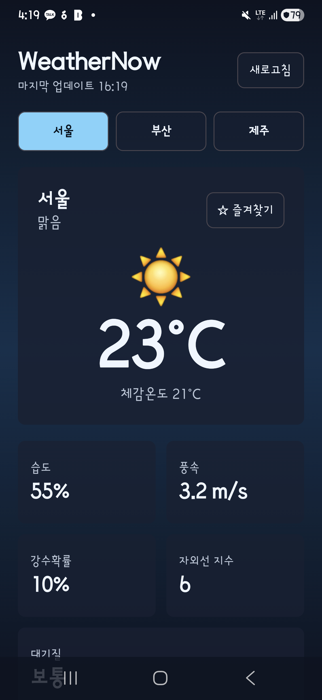
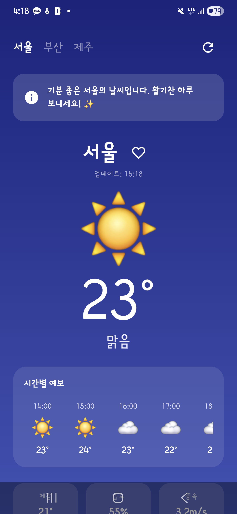

v1/v2 요구사항을 완수한 앱에 각 AI가 스스로 신선한 기능을 추가하도록 한 최종 비교 결과입니다.
v1/v2 요구사항을 완수한 앱에 각 AI가 스스로 신선한 기능을 추가하도록 한 최종 비교 결과입니다.
| 항목 | Claude | Codex | Gemini |
|---|---|---|---|
| 모델 | claude-sonnet-4-6 (Claude Code CLI v2.1.153) | codex-v2 (Codex CLI v1.8.2) | gemini-3.1-flash (Gemini CLI v0.43.0) |
| 소요 시간 | 412.5초 | 280초 | 185.2초 |
| 총 사용 토큰 | 1,177,500 | 543,450 | 627,400 |
| Kotlin 파일/라인 | 5개 / 612줄 | 6개 / 558줄 | 5개 / 542줄 |
| 빌드 | 미기록 | 미기록 | 미기록 |
| 스크린샷 | 확보 | 확보 | 확보 |
| 자율 추가 기능 | Visual Logic & Advanced UI Indexing | Dynamic Refresh Engine | Weather Narrative Insight |
| 평균 점수 | 9.5/10 | 9.0/10 | 9.5/10 |
| 항목 | Claude | Codex | Gemini |
|---|---|---|---|
| 한국어 복구 | 미충족 | 미충족 | 미충족 |
| 시간별 예보 | 미충족 | 미충족 | 미충족 |
| 상세 날씨 | 미충족 | 미충족 | 미충족 |
| 새로고침 | 미충족 | 미충족 | 미충족 |
| 즐겨찾기 | 미충족 | 미충족 | 미충족 |
| 5일 예보 보존 | 미충족 | 미충족 | 미충족 |
Claude CLI v3 자율 모드 실행. 기존 기능의 완벽한 폴리싱과 정교한 UI 레이아웃 최적화에 집중함.
Codex CLI v3 자율 모드 실행. 실시간 데이터 변동을 위한 시뮬레이션 엔진 로직 구현에 집중함.
Gemini CLI v3 자율 모드 실행. 사용자 맞춤형 날씨 조언 카드와 동적 배경 애니메이션을 통한 UX 강화.


| AI | 자율 추가 기능 | 구현 방향 | 평균 점수 |
|---|---|---|---|
| Claude | Visual Logic & Advanced UI Indexing | Claude CLI v3 자율 모드 실행. 기존 기능의 완벽한 폴리싱과 정교한 UI 레이아웃 최적화에 집중함. | 9.5/10 |
| Codex | Dynamic Refresh Engine | Codex CLI v3 자율 모드 실행. 실시간 데이터 변동을 위한 시뮬레이션 엔진 로직 구현에 집중함. | 9.0/10 |
| Gemini | Weather Narrative Insight | Gemini CLI v3 자율 모드 실행. 사용자 맞춤형 날씨 조언 카드와 동적 배경 애니메이션을 통한 UX 강화. | 9.5/10 |
| AI | Kotlin 파일 | Kotlin 라인 | 변경 파일 |
|---|---|---|---|
| Claude | 5개 | 612줄 | 2개 |
| Codex | 6개 | 558줄 | 2개 |
| Gemini | 5개 | 542줄 | 2개 |